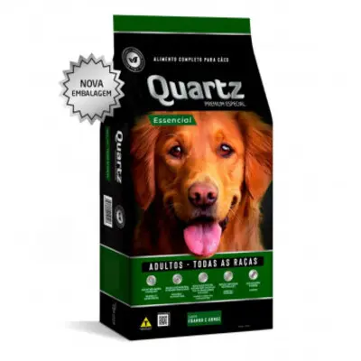

Ração para Cães Adultos
Detalhes do Produto
- Marca
- PremiumDog
- Peso
- 15kg
- Indicação
- Cães adultos de todas as raças
- Ingredientes Principais
- Carne de frango, arroz integral, vegetais
- Benefícios
-
- Fortalece o sistema imunológico
- Melhora a digestão
- Pelagem mais brilhante
- Validade
- 12 meses
- Preço
- R$ 189,90
Descrição
Essa ração para Cães Adultos é formulada com ingredientes selecionados para proporcionar nutrição completa e balanceada. Desenvolvida por veterinários, garante saúde e vitalidade para seu melhor amigo.